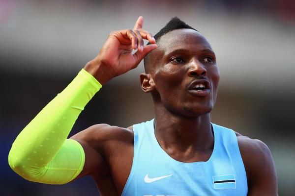
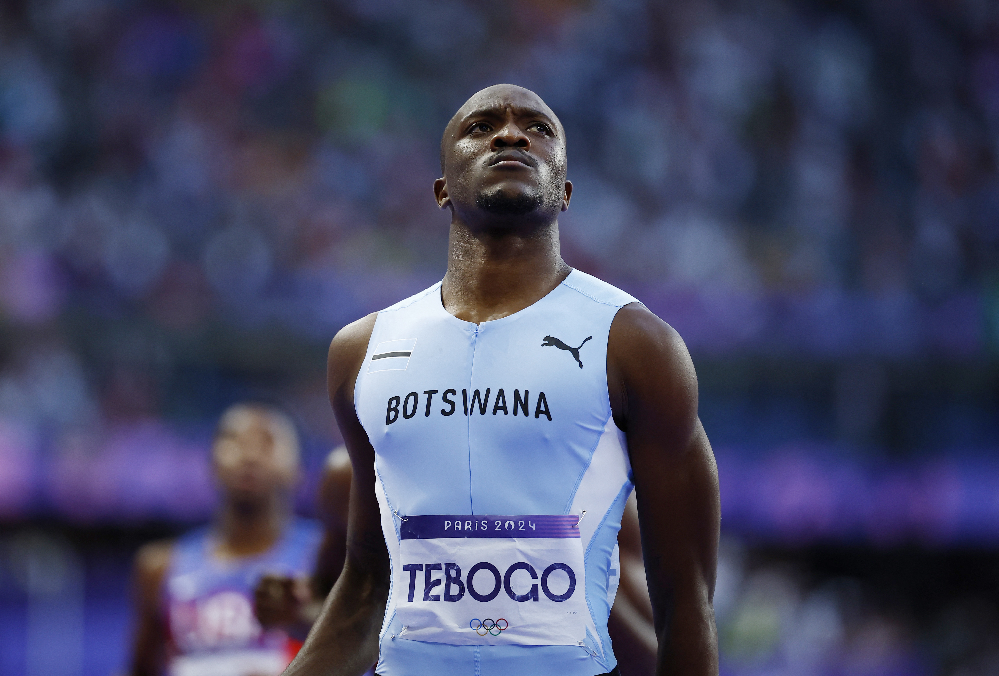

Athletics Achievements
Isaac Makwala – One of Africa’s fastest sprinters, Makwala made headlines when he ran alone on the track during the 2017 World Championships to qualify for the final. He has proudly represented Botswana in global competitions.
Letsile Tebogo – A rising sprint sensation, Tebogo made history by winning Botswana's first-ever Olympic gold medal in the 200m race at the 2024 Olympics, beating favorites like Noah Lyles.
Men’s 4x400m Relay Team – The Botswana relay team earned a bronze medal at the Tokyo 2020 Olympics and a silver medal at the Paris 2024 Olympics, showcasing world-class teamwork and perseverance.